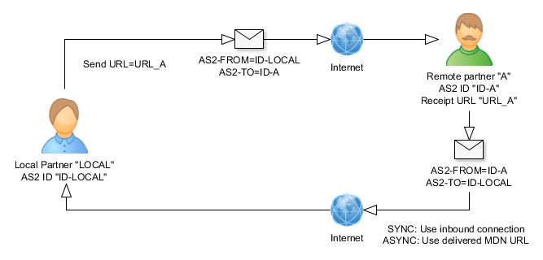

Participants of every AS2 communication are you (localstation) and your trading
partners. This is why the interface uses two different icons for these parties:
Local station (you), local
Trading partner (TP), remote
The configuration of a partner differs depending if it is the local statation
or the trading partner. The partner configuration GUI will not show some options
if you are the TP/localstation. Please don't be confused about this.
There has to be defined always min one local station for the server. You could
create as many local stations as you wish, this allows to present different
identities.
Please remember that most settings in this panel belong to the remote partner.
That is why the number of visible tabs is reduced if you have configured a partner
as "local station".
Settings
The partner settings define the behavior of the server depending on a partner
in many ways: The following paragraph describes these settings:
Misc:
Every TP and the local stations use an internal name (for the as2 server
only) and a public AS2 id. The AS2 id must be sent to your partners to allow
them to identify your messages.
Security:
This product supports encryption and digitial signature of AS2 messages. There
are different encryption algorithm and signature algorith. You and your trading
partner have to chose the same algorithms else the communication will fail.
The security settings are not only valid for outbound messages. If you have
for example setup "3DES" as encryption inbound messages of this partner
are expected to be encrypted with this algorithm, too - else the transaction
will be rejected with the hint insufficient-message-security.
The signature algorith is not only used to sign the AS2 messages but also requested
as hash function for signed MDN.
Please make an appointment with your partner about these AS2 communication settings.
Please remember that the SHA-2 hash algorithms (SHA-256, SHA-384, SHA-256) are
not part of the standard AS2 protocol. They are part of the AS2 optional profile
"SHA-2". This optional profile has been introduced at the end of 2012
and has been implemented in the first AS2 products in the middle of 2013. If
your parter has an older AS2 software or does not support this optional profile
you must not use SHA-2 as hash alrorithm for successful data transfer.
mendelson AS2 supports the optional profile SHA-2 since "mendelson AS2
2013 build 274", released in 09/2013.
Please remember that there are two different types of signature algorithm available,
these are the standard SHA-n algorithm and the SHA-n algorithm using the RSASSA-PSS
signature scheme for outbound signatures. The reason could be found in RFC 4056:
1.1. PSS Algorithm
Although there are no known defects with the PKCS #1 v1.5 [P1v1.5]
signature algorithm, RSASSA-PSS [P1v2.1] was developed in an effort
to have more mathematically provable security. PKCS #1 v1.5
signatures were developed in an ad hoc manner; RSASSA-PSS was
developed based on mathematical foundations.
There are some signature algorithms that are generally considered to be no longer
secure and therefore may not be recommended.
Ultimately, it is always up to your discretion (as with all parameters) and
coordination with your partner whether you want to use them.
To visualize our non-binding recommendations, we use the following icons with
the following meanings when displaying and selecting signature algorithms:
No signature algorithm
The signature algorithm is generally considered insecure (non-binding
recommendation at the time of release)
The signature algorithm is generally considered to be quite secure (non-binding
recommendation at the time of release)
Content signature settings:
Entry
Used alrorithm
Hints
MD5
MD5
The MD5 algorithm is a widely used hash function producing a 128-bit hash
value. Please do not use the algorithm as
long it is not required for the integration as it is not secure!
SHA-1
EC Key: SHA1withECDSA
RSA Key: SHA1withRSA
RSA Key: PKCS#1 v1.5
SHA-256
EC Key: SHA256withECDSA
RSA Key: SHA256withRSA
RSA Key: PKCS#1 v1.5.
SHA-384
EC Key: SHA384withECDSA
RSA Key: SHA384withRSA
RSA Key: PKCS#1 v1.5
SHA-512
EC Key: SHA512withECDSA
RSA Key: SHA512withRSA
RSA Key: PKCS#1 v1.5
SHA-1 (RSA SSA-PSS Signaturschema)
EC Key: Not supported
RSA Key: SHA1withRSAandMGF1
RFC 3447, PKCS#1 v2.1 RSASSA-PSS signature scheme with SHA-1 as hash algorithm
und MGF1, Probabilistic Signature Scheme
SHA-224 (RSA SSA-PSS Signaturschema)
EC Key: Not supported
RSA Key: SHA224withRSAandMGF1
RFC 3447, PKCS#1 v2.1 RSASSA-PSS signature scheme with SHA-224 as hash
algorithm und MGF1, Probabilistic Signature
Scheme
SHA-256 (RSA SSA-PSS Signaturschema)
EC Key: Not supported
RSA Key: SHA256withRSAandMGF1
RFC 3447, PKCS#1 v2.1 RSASSA-PSS signature scheme with SHA-256 as hash
algorithm und MGF1, Probabilistic Signature
Scheme
SHA-384 (RSA SSA-PSS Signaturschema)
EC Key: Not supported
RSA Key: SHA384withRSAandMGF1
RFC 3447, PKCS#1v2.1 RSASSA-PSS signature scheme with SHA-384 as hash
algorithm und MGF1, Probabilistic Signature
Scheme
SHA-512 (RSA SSA-PSS Signaturschema)
EC Key: Not supported
RSA Key: SHA512withRSAandMGF1
RFC 3447, PKCS#1v2.1 RSASSA-PSS signature scheme with SHA-512 as hash
algorithm und MGF1. Please remember that the key length has to be
> 1024 bit else the error message "key too
small for specified hash and salt lengths" will come up.
The signature of the MDN attempts to use the same signature scheme as it was
used for incoming AS2 messages. Thus, if an incoming message is signed with
SHA-1 (RSASSA-PSS) and SHA-1 is listed as a possible signature algorithm for
the MDN in the Disposition Notification Options (HTTP header) of the incoming
AS2 message, SHA-1 (RSASSA-PSS) is used as signature for the outbound MDN.
There are some encryption algorithms that are generally considered no longer
secure and therefore may not be recommended.
Ultimately, it is always up to your discretion (as with all parameters) and
coordination with your partner whether you want to use them.
To visualize our non-binding recommendations, we use the following icons with
the following meanings when displaying and selecting encryption algorithms:
Not encrypted
The encryption algorithm is generally considered insecure (non-binding
recommendation at the time of release)
The encryption algorithm is generally considered to be quite secure (non-binding
recommendation at the time of release)
Content encryption settings:
Entry
Used alrorithm
Hints
3DES
3DES
Triple DES (3DES), officially the Triple Data Encryption Algorithm (TDEA
or Triple DEA), is a symmetric-key block cipher, which applies the Data
Encryption Standard (DES) cipher algorithm three times to each data block.
The original DES cipher's key size of 56 bits was generally sufficient when
that algorithm was designed, but the availability of increasing computational
power made brute-force attacks feasible. Triple DES provides a relatively
simple method of increasing the key size of DES to protect against such
attacks, without the need to design a completely new block cipher algorithm.
The Triple Data Encryption Algorithm (3DES) is being officially decommissioned by the NIST ((National Institute of Standards and Technology, US), according to draught guidelines provided by NIST on July 19, 2018. According to the standards, 3DES will be deprecated for all new applications following a period of public deliberation, and its use will be prohibited after 2023.
RC2-40
RC2
RC2 (also known as ARC2) is a symmetric-key block cipher designed by Ron
Rivest in 1987. "RC" stands for "Ron's Code" or "Rivest
Cipher", RFC 2268. RC2 is vulnerable
to a related-key attack using 234 chosen plaintexts
(Kelsey et al., 1997).
RC2-64
RC2
RC2 (also known as ARC2) is a symmetric-key block cipher designed by Ron
Rivest in 1987. "RC" stands for "Ron's Code" or "Rivest
Cipher", RFC 2268. RC2 is vulnerable
to a related-key attack using 234 chosen plaintexts
(Kelsey et al., 1997).
RC2-128
RC2
RC2 (also known as ARC2) is a symmetric-key block cipher designed by Ron
Rivest in 1987. "RC" stands for "Ron's Code" or "Rivest
Cipher", RFC 2268. RC2 is vulnerable
to a related-key attack using 234 chosen plaintexts
(Kelsey et al., 1997).
RC2-196
RC2
RC2 (also known as ARC2) is a symmetric-key block cipher designed by Ron
Rivest in 1987. "RC" stands for "Ron's Code" or "Rivest
Cipher", RFC 2268. RC2 is vulnerable
to a related-key attack using 234 chosen plaintexts
(Kelsey et al., 1997).
AES-128 (CBC)
AES_CBC
Advanced Encryption Standard.
The names of the three AES variants AES-128, AES-192 and AES-256 each refer to the selected key length. This is the implementation with the CBC block mode - this is a relatively old mode that is usually always requested when "AES-128" is mentioned.
AES-192 (CBC)
AES_CBC
Advanced Encryption Standard.
The names of the three AES variants AES-128, AES-192 and AES-256 each refer to the selected key length. This is the implementation with the CBC block mode - this is a relatively old mode that is usually always requested when "AES-192" is mentioned.
AES-256 (CBC)
AES_CBC
Advanced Encryption Standard.
The names of the three AES variants AES-128, AES-192 and AES-256 each refer to the selected key length. This is the implementation with the CBC block mode - this is a relatively old mode that is usually always requested when "AES-256" is mentioned.
AES-128 (GCM)
AES_GCM
Advanced Encryption Standard.
The names of the three AES variants AES-128, AES-192 and AES-256 each refer to the selected key length. This is the implementation with Galois/Counter Mode (GCM).
This algorithm is also used and mandatory as of TLS 1.2, it's defined in RFC 5288.
AES-192 (GCM)
AES_GCM
Advanced Encryption Standard.
The names of the three AES variants AES-128, AES-192 and AES-256 each refer to the selected key length. This is the implementation with Galois/Counter Mode (GCM). This algorithm is also used and mandatory as of TLS 1.2, it's defined in RFC 5288.
AES-256 (GCM)
AES_GCM
Advanced Encryption Standard.
The names of the three AES variants AES-128, AES-192 and AES-256 each refer to the selected key length. This is the implementation with Galois/Counter Mode (GCM). This algorithm is also used and mandatory as of TLS 1.2, it's defined in RFC 5288.
AES-128 (CBC, RSAES_AOEP)
AES-128_CBC RSAES_AOEP pkcs#1v2.1 SHA-256
Advanced Encryption Standard
(Encryption Scheme Optimal
Asymmetric Encryption Padding
[RFC 3447]), Key encryption algorithm is RSAES_AOEP.
AES-192 (CBC, RSAES_AOEP)
AES-192_CBC RSAES_AOEP pkcs#1v2.1 SHA-256
Advanced Encryption Standard
(Encryption Scheme Optimal
Asymmetric Encryption Padding
[RFC 3447]), Key encryption algorithm is RSAES_AOEP.
AES-256 (CBC, RSAES_AOEP)
AES-256_CBC RSAES_AOEP pkcs#1v2.1 SHA-256
Advanced Encryption Standard
(Encryption Scheme Optimal
Asymmetric Encryption Padding
[RFC 3447]), Key encryption algorithm is RSAES_AOEP.
AES-128 (GCM, RSAES_AOEP)
AES-128_GCM RSAES_AOEP pkcs#1v2.1 SHA-256
Advanced Encryption Standard
(Encryption Scheme Optimal Asymmetric Encryption Padding
[RFC 3447]), Key encryption algorithm is RSAES_AOEP.
AES-192 (GCM, RSAES_AOEP)
AES-192_GCM RSAES_AOEP pkcs#1v2.1 SHA-256
Advanced Encryption Standard
(Encryption Scheme Optimal Asymmetric Encryption Padding
[RFC 3447]), Key encryption algorithm is RSAES_AOEP.
AES-256 (GCM, RSAES_AOEP)
AES-256_GCM RSAES_AOEP pkcs#1v2.1 SHA-256
Advanced Encryption Standard
(Encryption Scheme Optimal Asymmetric Encryption Padding
[RFC 3447]), Key encryption algorithm is RSAES_AOEP.
AES-128 (CCM)
AES_CCM
Advanced Encryption Standard. The names of the three AES variants AES-128, AES-192 and AES-256 each refer to the selected key length. This is the implementation with Counter with CBC-MAC Modus (CCM).
AES-192 (CCM)
AES_CCM
Advanced Encryption Standard. The names of the three AES variants AES-128, AES-192 and AES-256 each refer to the selected key length. This is the implementation with Counter with CBC-MAC Modus (CCM).
AES-256 (CCM)
AES_CCM
Advanced Encryption Standard. The names of the three AES variants AES-128, AES-192 and AES-256 each refer to the selected key length. This is the implementation with Counter with CBC-MAC Modus (CCM).
CAMELLIA-128 (CBC)
CAMELLIA_128
Camellia is a symmetric key block cipher with a block size of 128 bits and key sizes of 128, 192 and 256 bits. It was jointly developed by Mitsubishi Electric and NTT of Japan. The cipher has been approved for use by the ISO/IEC, the European Union's NESSIE project and the Japanese CRYPTREC project. The cipher has security levels and processing abilities comparable to the Advanced Encryption Standard. It's defined in RFC 5528.
CAMELLIA-192 (CBC)
CAMELLIA_192
Camellia is a symmetric key block cipher with a block size of 128 bits and key sizes of 128, 192 and 256 bits. It was jointly developed by Mitsubishi Electric and NTT of Japan. The cipher has been approved for use by the ISO/IEC, the European Union's NESSIE project and the Japanese CRYPTREC project. The cipher has security levels and processing abilities comparable to the Advanced Encryption Standard. It's defined in RFC 5528.
CAMELLIA-256 (CBC)
CAMELLIA_256
Camellia is a symmetric key block cipher with a block size of 128 bits and key sizes of 128, 192 and 256 bits. It was jointly developed by Mitsubishi Electric and NTT of Japan. The cipher has been approved for use by the ISO/IEC, the European Union's NESSIE project and the Japanese CRYPTREC project. The cipher has security levels and processing abilities comparable to the Advanced Encryption Standard. It's defined in RFC 5528.
CHACHA20-POLY1305
CHACHA20-POLY1305
The ChaCha20 stream cipher and the Poly1305 message authentication code (MAC) were independently designed by Daniel J. Bernstein in 2005 and 2008. It is known for its simplicity, speed, and security. It uses a 256-bit key. ChaCha20 is among the fastest encryption algorithms available. Its defined in RFC 7539.
RC4-40
RC4
RC4 was designed by Ron Rivest of RSA Security in 1987. As of 2015, there
is speculation that some state cryptologic agencies may possess the capability
to break RC4 when used in the TLS protocol. IETF has published RFC 7465
to prohibit the use of RC4 in TLS. Multiple
vulnerabilities have been discovered in RC4.
RC4-56
RC4
RC4 was designed by Ron Rivest of RSA Security in 1987. As of 2015, there
is speculation that some state cryptologic agencies may possess the capability
to break RC4 when used in the TLS protocol. IETF has published RFC 7465
to prohibit the use of RC4 in TLS. Multiple
vulnerabilities have been discovered in RC4.
RC4-128
RC4
RC4 was designed by Ron Rivest of RSA Security in 1987. As of 2015, there
is speculation that some state cryptologic agencies may possess the capability
to break RC4 when used in the TLS protocol. IETF has published RFC 7465
to prohibit the use of RC4 in TLS. Multiple
vulnerabilities have been discovered in RC4.
DES
DES
DES is now considered to be insecure for many applications. This is mainly
due to the 56-bit key size being too small; in January 1999, distributed.net
and the Electronic Frontier Foundation collaborated to publicly break a
DES key in 22 hours and 15 minutes. 2006: The FPGA based parallel machine
COPACOBANA of the Universities of Bochum and Kiel, Germany, breaks DES in
9 days at $10,000 hardware cost.
Algorithm Identifier Protection Attribute
In contrast to X.509/PKIX, the cryptographic message syntax (CMS) used in AS2
is vulnerable to algorithm substitution attacks.
In an algorithm substitution attack, the attacker changes either the algorithm
or the parameters of the algorithm and thus changes the result of the signature
check. This allows the attacker to leverage the signature check.
The attribute "Algorithm Identifier Protection Attribute" now contains
a copy of the corresponding algorithm identifiers so that they are protected
by the signature or authentication process.
If you do not use this attribute (for compatibility reasons
with old AS2 systems, for example), this corresponds to the same security level
as if you were not using a data signature.
MDN (Message Delivery Notification):

The AS2 protocol requires a receipt acknowledgement for every sent message.
This ack is called "MDN" (Message Delivery
Notification). A transaction is completed if the MDN to sent data arrives.
There are two different types of MDN transfers: sync MDN and async MDN. Mainly
it depends on the message receiver with mode to select. If you chose the sync
MDN mode the MDN is sent on the same HTTP connection the message has been sent/received
on. In this case there is no information needed to which URL a MDN should be
sent to. If you chose the async MDN the AS2 messages contains information of
where to send a MDN to. Because of this the sender of a message has to define
a MDN URL in this case.
The EDIINT standard does not define on how long to wait for a async MDN before
setting the transaction on error. Mainly this time is set to 30 min but this
could be defined in the AS2 server settings.
Directory polling:
There are different possiblities to send messages to the AS2 server in this
product. You could directly copy the data to an outbound
directory of a defined partner. The poll manager for every partner will pick
up these files, enwrapp them into AS2 messages, encrypt and sign them (is requested).
This setting defines the bahavior of the poll manager per partner.
Its possible to define file patterns or a list of files that should be ignored
by the polling process - this is required if you are using a non atomic copy process to put the files there instead an atomic move. The patterns are comma separated, the default value is "*.tmp,*.temp".
These are the special characters in the patterns that will create regular expressions:
"*" will be replaced by the regexp ".*"
"?" will be replaced by the regexp "."
"." will be replaced by the regexp "\."
Every file name in the poll directory that matches these patterns will be
ignored.
Hint:
Even if it might be possible to set the poll interval to under 1s this makes
no sense and pushes up the CPU to 100%. Because of this the poll threads will
always wait a minimum of 1s, even if you configure the poll thread to wait 0s.
Polling a directory includes getting all file entries of a directory and sorting
them by date which is a slow process (file IO). Because the poll processes are
running per relationship and not perpartner the number of poll processes could
increase fast if you are using a huge amount of local stations, please have
a look at the following table which gives an idea of that:
Number of local stations
Number of partner
Number of directory poll processes
1
10
10
2
10
20
5
10
50
With the checkbox for directory polling you can switch off the poll process
of the directory. This can help to reduce the file IO, and you can also temporarily
interrupt an automatic transmission to a specific partner.
Since this interrupts the automated process of directory monitoring in the case
of a permanent configuration, you would either have to send the data manually
(via "Send file to partner" in the AS2 client) or you would have to
send the send requests in your respective flow via the command line.
Receipt:
It's possible to transmit the filename of a AS2 transmisson. Anyway this is
not standardized and not every AS2 product supports this option.
HTTP authentication:
Beneath message encryption, digital signature, TLS (transport layer security,
SSL) its also possible to define an additional passwort for the HTTP receipt.
This could be set here.
Notification:
If you use message quota you could setup the quota notification here. Attention:
You have to activate this configuration possibility in the settings first ("Interface").
HTTP Header:
Allows to reconfigure the HTTP headers of the AS2 messages and add new ones.
Please be careful using these settings because its possible to stop the communication
to a partner if you overwrite some reuqired AS2 Headers. Attention:
You have to activate this configuration possibility in the settings first ("Interface").
Send:
The AS2 messages are sent and received via HTTP or HTTPs. To perform this you
need the receipt URL of your TP for every communication. Please contact your
TP to get these data.
AS2 is a point to point protocol - both trading partners systems have be online.
Please do not change the default settings for subject and content type of the
message unlike you TP requests to change them.
It's also possible to set the content transfer encoding per partner. This is
"binary" by default, you could also set "base64".
There are multiple AS2 versions out with different features. If your TP uses
a AS2 solution >= AS 1.1 you may compress the message data to reduce the
sent data size.
The system transfers the original file name automatically. For this purpose,
a separate entry is created in the AS2 message structure in the payment header:
Content-Disposition: attachment; filename=myfile.txt
Since RFC 822 does not allow characters > ASCII 127 to be used in MIME headers,
the filename is encoded when necessary. For example, for the file "ö.txt"
the file name would be transmitted in the following format (RFC 2047, UTF-8,
B) and would have to be interpreted accordingly on the other side if it is to
be used:
You can trigger post-processing processes after receiving or sending data.
For detailed information, see the section Postprocessing.
Setting up a new connection
When you create a new connection, you must know the communication
parameters of your partner and tell him yours. The mendelson AS2
server can help you with a data sheet of communication parameters, you
can automatically create it and send it to the partner. In this form
there are all the required parameters, the partner can fill in his own
and return the data sheet.
You should start inputting your contact data for your local station
(tab "Contact" in the partner management). To create the data sheet
please navigate to "File-Create communication data sheet". There are
some additional details of your system that are required (receipt URL, comment), then a PDF is generated that contains editable PDF fields on the
partner site that can be filled out by the partner:
The PDF will have some attachments - these are the certificates that are required for your partner to establish an SSL connection and encrypt message to you or verify your digital signature. If you are using Mac OS X and you are using the standard PDF preview reader you will see no attachments - this is not supported there. Please install the acrobat reader to read the document in this case.